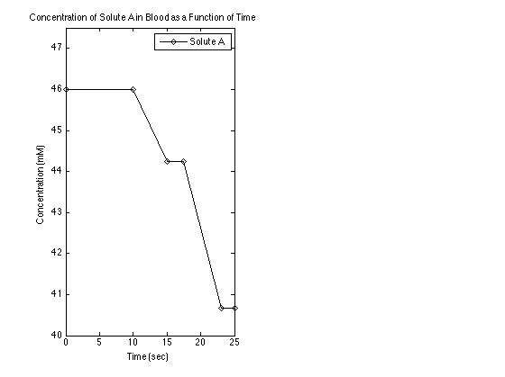
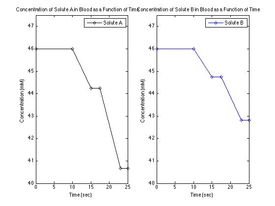

Contents
% Kyle King % BIOE340 - Section 0102 % Lab Assignment #1 % 9-30-2014
A. See Paper Notes
B. Plot in Matlab
clc, clear all % boilerplate
Part B, #1 - General
Check to make sure the function file is accessible
if (exist('LabOneB1.m', 'file') == 2)
disp('B. Part 1') tTime = 25; % s % Declare constants Csi = 46.00; % A solute starts in the blood at concentration of 46 mM Vo = 30; % The blood flows at a speed of 30 cm/sec % Write a MATLAB code to calculate the concentration profile of a solute (solute A) over the following regions of time: L0 = 10*30; % Calculate distance of the first tube: 10 s * 30 cm/s M = [0, 0, 0.35, 0, 0.65, 0]; L = [0, L0, 150, 75, 165, 60]; % solid tubes for the first 10 seconds (10 s * 30 cm/s) % At t = 10 seconds, the blood encounters the first filter that removes % the solute at an efficiency of 0.35 mM/sec (This region is 150 cm long) % A is too large to diffuse through the membrane, which is 75 cm long % a filter that can remove the solute at 0.65 mM/sec. This region is 165 cm long % The final 60 cm of travel is again solid tubing % Calculate concentrations in separate function file Cf1 = LabOneB1(Csi, Vo, M, L, 1, 1);
B. Part 1 At l = 0 cm and time = 0 s, the concentration is 46 mM At l = 0 cm and time = 0 s, the concentration is 46 mM and there is no change in concentration At l = 300 cm and time = 10 s, the concentration is 46 mM and there is no change in concentration At l = 450 cm and time = 15 s, the concentration is 44.25 mM and the change is -1.75 mM At l = 525 cm and time = 17.5 s, the concentration is 44.25 mM and there is no change in concentration At l = 690 cm and time = 23 s, the concentration is 40.675 mM and the change is -3.575 mM At l = 750 cm and time = 25 s, the concentration is 40.675 mM and there is no change in concentration
Part 2 - at given position
disp([13 'B. Part 2']) Lf = 410 - L0; % Manually calculated position of 410 cm % Declare constants % Use less efficient parameters M2 = [0, 0, 0.35]; L2 = [0, L0, Lf]; % Calculate answer to part 2 on the fly, because why not? Cf2 = LabOneB1(Csi, Vo, M2, L2, 0, 0); if (Cf2 > 45) disp('The system has a smaller theoretical concentration than in nature') elseif (Cf2 == 45) disp('The theoretical value is equal to the measured value') else disp(['The system has a slightly lower efficiency than expected in the model' ... 10 '(' num2str(Cf2) ' mM compared to 45 mM). This could be due to the assumption' ... 10 'that the blood was a constant mixture, instead the concentration is' 10 ... 'variable throughout the blood meaning that the actual diffusion will' 10 ... 'be lower than theoretical.']) end
B. Part 2 The system has a slightly lower efficiency than expected in the model (44.7167 mM compared to 45 mM). This could be due to the assumption that the blood was a constant mixture, instead the concentration is variable throughout the blood meaning that the actual diffusion will be lower than theoretical.
Part 3 - plot
disp([13 'B. Part 3 - See first subplot']) % Calculate the time array to use to plot the x-axis Times = L./Vo; % Turn time into a cumulative array by first declaring and then looping for plotting cumTimes(1) = 0; for i = 2:length(Cf1) cumTimes(i) = cumTimes(i-1) + Times(i); end % Plot the time versus concentration figure(1), subplot(1,2,1), plot(cumTimes,Cf1,'-dk'), legend('Solute A') title('Concentration of Solute A in Blood as a Function of Time') xlabel('Time (sec)'), ylabel('Concentration (mM)'), axis([0, tTime, 40, 47.5])
B. Part 3 - See first subplot
Part 4 - subplot
disp('B. Part 4 - See second subplot') M3 = [0, 0, 0.25, 0, 0.35, 0]; % Use new less-efficient filtering values Cf3 = LabOneB1(Csi, Vo, M3, L, 0, 1); % Calculate an array of concentrations subplot(1,2,2), plot(cumTimes, Cf3, '-db'), legend('Solute B') title('Concentration of Solute B in Blood as a Function of Time') xlabel('Time (sec)'), ylabel('Concentration (mM)'), axis([0, tTime, 40, 47.5])
B. Part 4 - See second subplot
else disp(['Error: No Function file found' 10 ... 'Make sure that the function is in the same directory and properly labeled as LabOneB1.m' ... 10 'If no file, copy and paste the code on lines 3-38 of function LabOne into a new file named LabOneB1.m']) end
C. Linear Models to evaluate a dialysis machines
disp([13 'C. Part 1']) A = [33.4, 8.1, 34.5, 35.2; 49.4, 4.2, 49.4, 47.5; 68.3, 6.0, 38.5, 25.1; 57.1, 3.2, 31.2, 61.2]; % syms Po C Ph U; m_X = [Po; C; Ph; U]; m_X = {'W'; 'X'; 'Y'; 'Z'}; M = [489.8; 598.2; 692.7; 588.4]; % Perform the Gaussian Elimination [gausselim, m_X, solution] = LabOneC1(A, m_X, M); % caluclate size of b [heightb, lengthb] = size(M); % Then use the size to display each value equal to the solution matrix disp([13 'The solution matrix: ']) for count = 1:heightb disp([m_X{count} ' = ' num2str(solution(count)) ' L/min']) end
C. Part 1 The solution matrix: Y = 6.6259 L/min W = 14.9642 L/min X = 3.2623 L/min Z = 0.98682 L/min